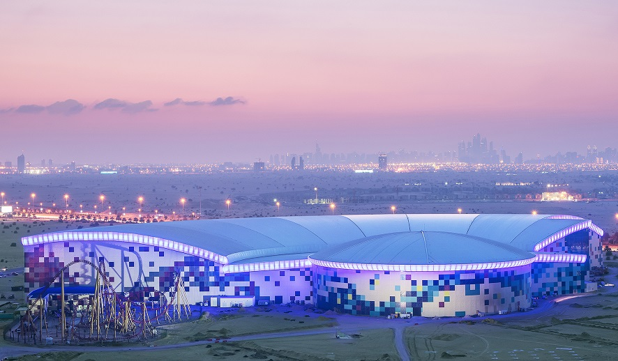

Khulna Government Model School and College (KGMSC) is a well-established government educational institution in Khulna that offers both school-level and college-level education under one disciplined and well-organized academic system. The institution is designed to provide students with a complete and continuous educational journey from early schooling to higher secondary education.
At khulna government model school and college, we believe that combining school and college education in one institution ensures academic consistency, mental stability, and stronger student-teacher relationships. This integrated system helps students perform better academically and develop confidence over time.
The school section of KGMSC plays a vital role in building the foundation of a student’s academic life. At this stage, emphasis is given to basic knowledge, discipline, moral values, and learning habits.
Key Features of the School Section:
1.Strong focus on fundamental subjects
2.Friendly and supportive learning environment
3.Age-appropriate teaching methods
4.Continuous assessment and guidance
5.Moral and character development
Students at the school level of khulna government model school and college are guided carefully to develop curiosity, confidence, and respect for learning.
The school section of KGMSC follows the national curriculum approved by the Ministry of Education while applying modern teaching strategies to make learning effective and enjoyable.
Our school education focuses on:
1.Clear understanding of concepts
2.Encouraging questions and curiosity
3.Developing reading and writing skills
4.Building discipline and responsibility
Teachers ensure that every student receives individual attention so that no learner is left behind.
The college section of Khulna Government Model School and College prepares students for higher education and future career paths. At this stage, students receive more subject-focused education, academic guidance, and career awareness.
College Section Highlights:
1.Government-approved academic structure
2.Experienced and subject-specialist teachers
3.Regular examinations and assessments
4.Academic counseling and guidance
5.Preparation for higher studies
The college section of kgmsc plays a crucial role in shaping students into confident and responsible young adults.
At khulna government model school and college, the college section emphasizes academic excellence, discipline, and goal-oriented learning. Students are encouraged to think critically, analyze problems, and apply knowledge practically.
Our college-level education ensures:
1.Strong academic preparation
2.Clear understanding of subjects
3.Ethical and disciplined student life
4.Readiness for university education
Teachers guide students closely to help them achieve their academic goals.
One of the biggest advantages of KGMSC is the smooth transition from school to college within the same institution. Students do not need to adjust to a new environment, rules, or teaching culture.
Benefits of this system include:
1.Familiar academic environment
2.Continuity in discipline and values
3.Strong teacher-student relationships
4.Reduced academic pressure
This integrated approach makes khulna government model school and college a preferred choice for students and parents.
Discipline is a core value at KGMSC for both school and college students. A structured discipline system ensures a peaceful, respectful, and productive learning environment.
Our discipline system promotes:
1.Punctuality and regular attendance
2.Respectful behavior
3.Proper uniform and cleanliness
4.Academic honesty
At khulna government model school and college, discipline is maintained with care, fairness, and student well-being in mind.
Both the school and college sections of KGMSC are supported by qualified, experienced, and government-appointed teachers. Teachers play a mentoring role and help students grow academically and personally.
Teachers at kgmsc:
1.Follow structured lesson plans
2.Use student-friendly teaching methods
3.Provide academic guidance
4.Encourage moral values and discipline
Their dedication ensures quality education across all levels.
Khulna Government Model School and College provides essential facilities to support effective learning for both school and college students.
Facilities include:
1.Clean and organized classrooms
2.Science laboratories
3.Computer labs
4.Library with academic materials
5.Activity spaces
These facilities help students gain knowledge through both theory and practice.
At KGMSC, both school and college students are encouraged to participate in co-curricular activities. These activities help students discover their talents and develop leadership skills.
Activities include:
1.BNCC
2.Scout programs
3.Debating Club
4.Science and Computer Clubs
5.Cultural activities
Moral education is a shared focus across the school and college sections of khulna government model school and college. Students are taught values such as honesty, respect, responsibility, and patriotism.
This ethical foundation helps students:
1.Become good human beings
2.Respect society and culture
3.Develop strong character
At KGMSC, education is not only academic but also moral.
KGMSC ensures a safe, respectful, and student-friendly environment for learners of all ages. Teachers and staff work together to maintain a supportive campus atmosphere.
Students benefit from:
1.Guidance and counseling
2.Respectful communication
3.Equal learning opportunities
4.Emotional and academic support
This environment helps students perform confidently at both school and college levels.
Khulna Government Model School and College values parent involvement in both school and college education. Regular communication between parents and teachers helps improve student performance.
Parent involvement includes:
1.Parent-teacher meetings
2.Academic progress updates
3.Discipline and attendance monitoring
This cooperation strengthens the overall education system at kgmsc.
As a government institution, khulna government model school and college strictly follows:
1.National curriculum
2.Government examination systems
3.Education policies and guidelines
4.Transparent academic practices
This commitment ensures fairness, quality, and accountability.
From school to college, KGMSC prepares students for:
1.Higher education
2.Competitive examinations
3.Responsible citizenship
4.Lifelong learning
Students leave khulna government model school and college with knowledge, confidence, and strong values.
Khulna Government Model School and College (KGMSC) provides a complete educational journey through its well-structured school and college sections. With academic excellence, discipline, moral education, and modern learning facilities, KGMSC continues to serve as a leading government institution in Khulna.
Choosing kgmsc means choosing quality education, strong values, and a brighter future.